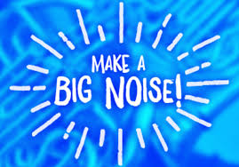

designing a focus group research proposal for Sistema Scotland participants
DISCLAIMER: While this project was undertaken as part of my BSc in psychology, I am not a professional psychologist. The project design was completed in accordance with the ethical code of conduct laid down by the British Psychological Society.
Musical performance has been found to help children develop a sense of themselves as musicians, as well as bolstering their self-esteem and helping foster a sense of group identity. Based on my literature review into the subject, I concentrated on forming a design for research with child musical participants.
My work on this subject was a project proposal for research with participants in the Sistema Scotland programme. Based on the El Sistema programme founded in Venezuela, this programme provides children in socio-economically disadvantaged parts of Scotland with musical instruments and space to practice and rehearse together. Previous research had found that participants' mental and emotional well-being was enhanced through the enjoyment of performance, the relationships forged through participation and the increase in confidence and self-esteem generated by praise and public performance of difficult musical skills. Further research might support the case for expanding the programme when it is presented to policymakers at home and abroad.
My research question was “How do school-age children in Scotland experience musical performance training as individuals and as members of a wider performance group?”. The previous research my proposal followed concentrated primarily on quantitative methods. My proposal was to form a focus group of older children, and for them to share their own lived experiences of learning to play instruments and performing with other children. This could be supplemented with one-to-one follow-up interviews if any of the participants felt they weren’t being heard in the focus group.
The entire proposal was designed throughout with the BPS’ ethical code of conduct in mind, and with the particular ethical concerns of working with child participants as my overriding concern. The design work I carried out for this proposal was sufficient to earn a distinction from the Open University’s examiners.